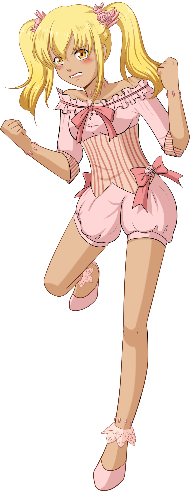
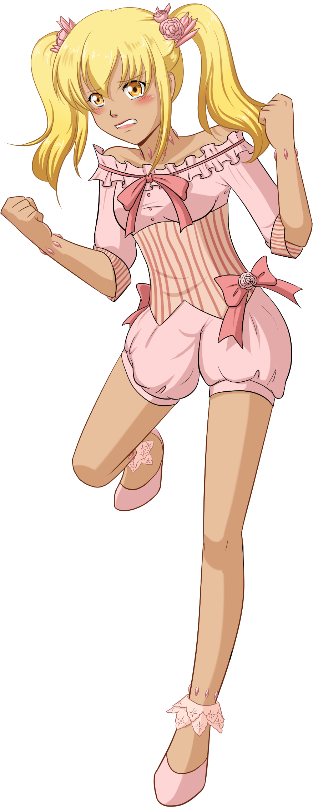

Itami Serafino
name: Itami Serafino
age: 17
date of birth: 11/13
hair color: blonde
hair style: shoulder length twin tails
skin tone: tan
eye color: gold
height: 6 ft
ethnicity/race: African/Japanese descended
citizenship: Tŏngī Kōtei-fū
key attribute: emotional
right-handed
body type: tall slim
Character Bio/Personality:
Many mistake Itami as a crybaby. This isn't necessarily true: while Itami has in fact been seen crying often in photograph and video,
it's more accurate to say that her emotions run close to the surface and easily come out.
Incidentally, a good deal of her popularity stems from her emotional transparency, being taken as a sort of sincerity.
Itami and her sister form the critically acclaimed and internationally loved pop group, Rainbow Star.